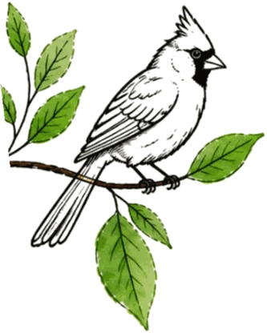

Nature lets their attention wander and the mind recharge
In nature, there’s always something to notice: a bird’s call, a leaf changing color, a trail of ants. Outside, my kids can spend a long time absorbed, tracking a cloud or watching leaves move in the wind. It’s a different kind of focus: curious, effortless, and deeply engaging.
Very large studies link nature to children’s attention and well-being. In Barcelona, 2,593 schoolchildren at greener schools improved more in memory and attention over a year. In Denmark, children who grew up with more green space, nearly one million of them, had lower rates of mental health problems later in life.
One leading explanation is “soft fascination”: nature holds attention gently, giving the brain’s effortful focus a chance to rest.
Sources
- Dadvand, P. et al. (2015). Green spaces and cognitive development in primary schoolchildren. PNAS, 112(26), 7937–7942.
- Engemann, K. et al. (2019). Residential green space in childhood is associated with lower risk of psychiatric disorders from adolescence into adulthood. PNAS, 116(11), 5188–5193.
- Kaplan, R. & Kaplan, S. (1989). The Experience of Nature. Cambridge University Press.

So we try to build in time to explore, notice, and be curious.